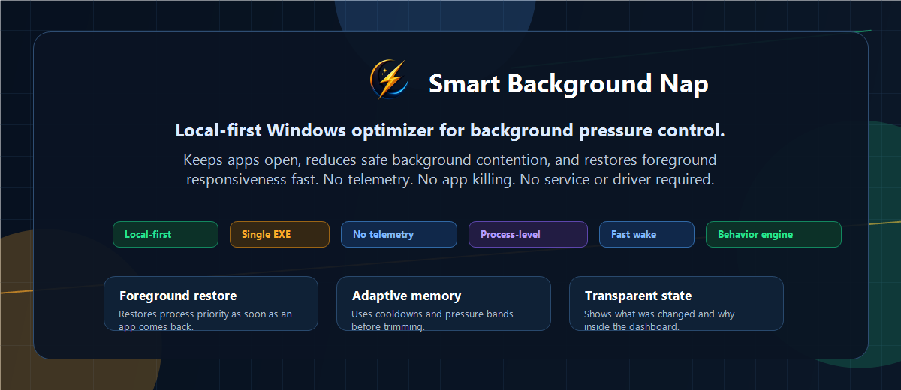

Otimizador local para Windows
Apps abertos.
Fundo sob controle.
Smart Background Nap reduz o peso seguro de apps em segundo plano sem fechar nada, mantendo a janela ativa rápida para jogos, criação, estudo e multitarefa pesada.
Criado por
KaozyKing @kingkaozydev
Release oficial
carregando...
buscando GitHub Releases
Nap Engine
24apps em amostra
Janela ativa recuperada rápido
Apps de fundo em perfil leve
EcoQoS aplicado onde há suporte
Modos do motor
Escolha o comportamento certo para cada sessão.
O Smart Nap não usa um único perfil para tudo. Ele muda a forma de aliviar o fundo conforme você está jogando, fazendo live, trabalhando ou só mantendo o PC responsivo no dia a dia.
Observa a sessão e decide sozinho. Ao sair de Jogos ou Live, pode restaurar o plano de energia anterior ou usar Equilibrado para evitar alto desempenho parado.
Protege tela cheia e primeiro plano, reduz disputa de CPU/RAM/I/O no fundo e oferece o plano Smart Nap MODO JOGO com retorno automático ao Equilibrado por inatividade.
Protege OBS, Streamlabs, TikTok LIVE Studio, encoder, áudio e jogo. Também controla helpers de navegador em segundo plano sem cortar processos importantes da transmissão.
Mantém comunicação, mídia, navegador e ferramentas de criação mais acordados. É o modo para trocar de janela sem sentir apps voltando lentos.
Usa uma postura mais firme em apps parados quando a memória fica pressionada. Bom para sessões pesadas em PCs modestos, sem encerrar o que está aberto.
Planos de energia só mudam com confirmação. O app salva o plano anterior, explica o impacto e deixa o usuário decidir se quer manter, restaurar ou voltar ao Equilibrado.
Motor de comportamento
Otimização que respeita o que você está fazendo.
O app observa a sessão local, protege a janela ativa e aplica perfis Leve, Equilibrado ou Forte apenas onde faz sentido. A ideia não é prometer milagre: é reduzir ruído de fundo com decisões visíveis e reversíveis.
Quando você volta para um app, prioridade, I/O, memória e EcoQoS são restaurados.
Smart Learning aprende padrões no próprio PC e não envia dados para ninguém.
O objetivo é deixar apps quietos, não encerrar o que o usuário abriu.
Dashboard, tray, logs, Permission Guard e Live Manager mostram o que foi mexido.

UX clara
Feito para ficar aberto no tray e sair da frente.
O launcher existe para explicar o motor, não para consumir o que ele tenta economizar. Ao minimizar, a interface reduz atualizações visuais e o controle segue pelo tray.
Atualiza sozinho pelo GitHub
Release mais recente
Carregando notas oficiais da última release...
Baixar última versãoÚltimas mudançashistórico
- Buscando atividade do GitHub...
AntesApps disputando RAM, I/O e prioridade em silêncio.
→
DepoisApps de fundo mais leves, janela ativa voltando rápido.
Confiança local
Sem telemetria, sem conta, sem driver.
- Não lê documentos, cookies, contas ou arquivos de jogos.
- Não instala driver ou serviço do Windows. Plano de energia só muda com confirmação.
- Consulta apenas o GitHub oficial para release/update quando necessário.
- As decisões ficam visíveis no dashboard, logs e relatório de segurança.
Pronto para testar